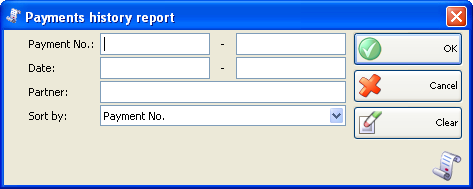
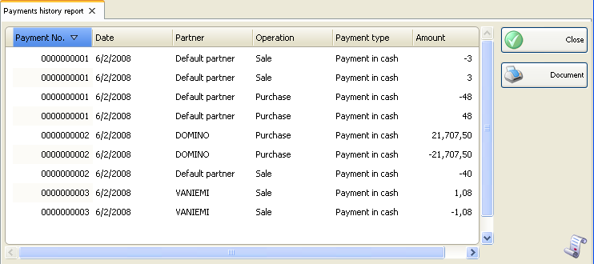

Raport istoric plati
In prima fereastra a raportului se pot specifica criteriile de filtrare si campurile care se vor vizualiza.
Numai randurile bifate se vor vizualiza in raport.

Se pot allege filtrari pentru fiecare camp prin apasarea tastei� F4.
Se poate limita raportul la un singur criteriu de filtrare � de exemplu, vizualizareplati pentru un singur partener sau se pot aplica mai multe criterii de filtrare in acelasi timp � de exemplu, vizualizare plati pentru un anumit client pe o anumita perioada de timp.
Pentru stergerea filtrarilor specificate, click pe butonul Clear. In aceasta situatie raportul va afisa toate operatiile fara nici o restrictie.
Click pe butonul OK pentru a genera raportul dupa specificarea criteriilor de filtrare. Click pe butonul Cancel pentru inchiderea ferestrei.

Raportul istoric plati contine informatii despre operatile neplatite si / sau partial platite si platile ulterioare. Sunt afisate numar document, data, datele partenerului, operatia, tipul platii si valoarea. Daca suma este negative, nu s-a efectuat nici o plata. Daca suma este pozitiva, platile au fost efectuate.
�2006-2012 Microinvest, All rights reserved